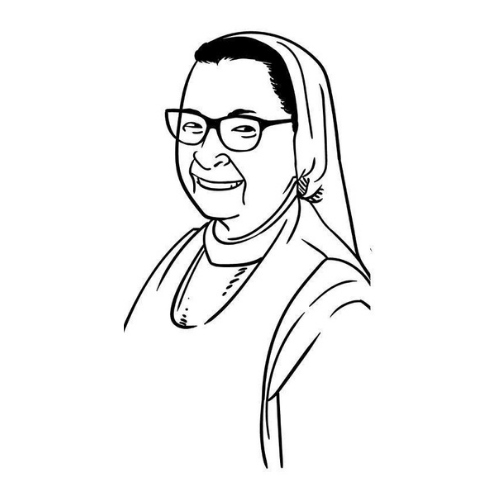

SOBRE
Localizada na cidade de Jaguariúna, interior de São Paulo, a ONG Casa Acolhedora Irma Antônia é uma entidade sem fins lucrativos com o intuito de fazer a diferença na vida de pessoas e promovem a integração de pessoas em situação de vulnerabilidade social e pessoas em situação de rua.